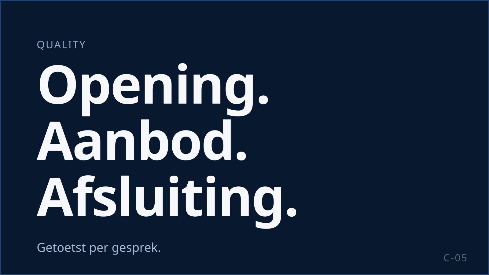

Kwaliteit is geen afdeling achteraf
Kwaliteit en compliance zijn bij KISS het fundament waarop een campagne wordt gebouwd en aangestuurd, niet een controle die er achteraf overheen gaat. Ze zitten in de training, in de dagelijkse aansturing op de vloer, in de monitoring en in wat u terugziet in de rapportage. KISS is ISO 27001-gecertificeerd.

Kwaliteit begint vóór het gesprek
Wat een agent in een gesprek doet, is grotendeels bepaald voordat de telefoon overgaat. Daar organiseren wij het dan ook.
Training en toetsing vooraf
Agents worden opgeleid op het vak en op de campagne. Vóór de eerste call worden zij getoetst op het script en op de regels die voor die campagne gelden. Wie niet door de toets komt, belt niet.
Heldere kaders per campagne
Script, aanbod, grenzen van het aanbod en de regels die in uw sector gelden worden vóór live vastgelegd en met u afgestemd. Een agent hoeft in het gesprek niet te improviseren over wat wel en niet mag.
Bestand gecontroleerd
Voordat er wordt gebeld, controleren wij per record of er een grondslag is en ontdubbelen wij tegen uw opt-out-lijst. U krijgt terug hoeveel records zijn uitgesloten en waarom.
Een supervisor op 10 tot 15 agents
Supervisors zitten op de vloer, luisteren mee en zijn verantwoordelijk voor de kwaliteit en de coaching van hun team. Kwaliteit is daarmee onderdeel van de dagelijkse aansturing, niet van een aparte afdeling.
Meten wat er werkelijk gebeurt
Wij beoordelen gesprekken op meer dan het salesresultaat. Een verkocht abonnement uit een slecht gesprek is geen resultaat.
Waar wij op beoordelen
Gesprekskwaliteit, naleving van script en afspraken, de compliance-elementen, de commerciële uitvoering, de manier waarop de klant wordt benaderd en de afsluiting. Per campagne leggen wij vast wat zwaar weegt.
Monitoring en interne controle
Opgenomen gesprekken worden beluisterd en beoordeeld. Supervisors en opdrachtgever kalibreren die beoordeling in de eerste weken van een campagne, zodat beide dezelfde lat hanteren.
Audits en structurele evaluatie
Naast de dagelijkse monitoring kijken wij periodiek naar het geheel: afwijkingen signaleren, risico's vroeg herkennen en patronen zien die in één gesprek niet opvallen.
Wat een afwijking oplevert
Een gesprek dat niet aan de eisen voldoet, telt niet als resultaat. Het gaat terug naar de supervisor en naar coaching, en bij een patroon terug naar de training.
Meer dan 98% DMCC-compliance
KISS realiseert consequent een compliancescore van meer dan 98%. Dat cijfer is geen belofte vooraf maar een resultaat: de processen, de training en de aansturing zijn erop ingericht en het wordt gemeten.
Wat het niet zegt: dat fouten onmogelijk zijn. Elke afwijking die wij vinden wordt onderzocht, teruggekoppeld en vertaald naar een concrete aanpassing in het script, de training of de aansturing. Een organisatie die beweert dat er nooit iets misgaat, meet niet goed genoeg.
Van controle naar verbetering
Controleren alleen maakt niets beter. Wat wij in monitoring, audits en performance zien, gaat terug de operatie in.
Naar de agent
De beoordeling van een gesprek is geen rapportcijfer maar input voor het volgende coachgesprek: dit ging goed, dit kan beter, zo pak je het de volgende keer aan.
Naar de supervisor
Terugkerende punten binnen een team zijn een aansturingsvraagstuk, geen individueel probleem. De supervisor krijgt ze terug en stuurt erop.
Naar de training
Wat op meerdere teams terugkomt, verwerken wij in de training en in het script. Zo verdwijnt een fout structureel in plaats van per agent.
U ziet wat er gebeurt
Grip op een uitbestede operatie begint bij inzicht. U hoeft er niet naar te vragen.
Dagelijks Metric Report
Opdrachtgevers ontvangen dagelijks een rapport met de cijfers van de campagne. Geen maandelijkse terugblik waarin een probleem van drie weken oud pas zichtbaar wordt.
Wekelijkse performancecall
Waar gewenst bespreken wij de performance wekelijks: wat zien wij, wat verklaart het, wat passen wij aan. De frequentie stemmen wij met u af.
Kwaliteit zichtbaar in de rapportage
Naast de commerciële cijfers ziet u wat er op kwaliteit gebeurt: wat is beoordeeld, wat kwam eruit en welke coachingacties daaruit volgden.
Klachten en opt-outs
Klachten volgen een vaste procedure: beoordeeld op de opname, afgehandeld binnen de met u afgesproken doorlooptijd en aan u teruggekoppeld. Opt-outs verwerken wij direct en gaan terug naar u.
Zo bellen wij
Wij bellen uitsluitend op basis van aantoonbare toestemming of, als de opdrachtgever daaronder valt, op basis van een van de uitzonderingen in art. 11.7 lid 5 of lid 6 Telecommunicatiewet. Wij werken volgens de Code voor Telemarketing van de Stichting Reclame Code. Wij melden aan het begin van elk gesprek wie wij zijn, namens wie wij bellen en wat het doel is. Overeenkomsten tot het geregeld verrichten van diensten worden pas definitief na schriftelijke aanvaarding door de consument (art. 6:230v lid 6 BW). Elk verzoek om niet meer gebeld te worden verwerken wij direct. Wij werken altijd onder een verwerkersovereenkomst. Gesprekken worden opgenomen voor kwaliteit en bewijs; de gebelde wordt daarover geïnformeerd.
Sinds 1 juli 2026 is de klantrelatie-uitzondering voor telefonie vervallen. Voor ideële en charitatieve instellingen, loterijvergunninghouders en uitgevers van periodieken houdt de wet een eigen uitzondering in stand; wij kennen de voorwaarden en passen ze toe. Per 1 oktober 2026 treedt een nieuwe versie van de Code voor Telemarketing in werking; wij verwerken wetswijzigingen proactief in scripts en processen en communiceren ze aan opdrachtgevers. Stand van de regelgeving op 17 september 2026; dit is geen juridisch advies. Wij toetsen de toepassing per campagne met u en uw jurist.
De verantwoordelijkheid voor compliance blijft bij u als opdrachtgever. Wij richten de uitvoering compliant in en leveren het bewijs. Achtergrond en bronnen: Telemarketing uitbesteden
Wat u van ons mag verwachten, voor elk gesprek, elk bestand en elke rapportage
Voordat we bellen
| Wat | Hoe KISS dit doet | Wat u ontvangt |
|---|---|---|
| 1. Verwerkersovereenkomst | Getekend vóór de eerste gegevensoverdracht; doel, subverwerkers en bewaartermijnen vastgelegd. | Getekende verwerkersovereenkomst. |
| 2. Bestandscheck | Per record aantoonbare toestemming of een wettelijke uitzondering (termijn gecontroleerd); ontdubbeld tegen uw opt-out-lijst. | Rapport van de bestandscheck: aantal records, uitgesloten records en reden. |
| 3. Script en gespreksopening | Getoetst aan art. 6:230v BW en de Code Telemarketing: naam, opdrachtgever en doel van het gesprek in de eerste zinnen. | Het getoetste script ter goedkeuring. |
| 4. Terugbelnummer | Herkenbaar, werkend nummer dat minimaal zes maanden bereikbaar blijft; nooit anoniem. | Het nummer waarmee namens u wordt gebeld. |
| 5. Beltijden en pogingen | Ma t/m vr 09:00 tot 21:00, za 10:00 tot 17:00, niet op zon- en feestdagen; maximaal drie pogingen per dag met vier uur ertussen. Ingesteld in de dialer. | Instellingen in de campagnebriefing. |
| 6. Sectorregels | Leeftijdscheck en kwetsbaarheidssignalen bij loterijen; de driejaarstermijn uit de Code voor Telemarketing; de Reclamecode voor kansspelen. | Sectorregels als scriptregels en beoordelingscriteria. |
| 7. Training en toets | Agents getraind en getoetst op wetgeving en script vóór de eerste call. | Trainingsregistratie per agent. |
Tijdens het gesprek
| Wat | Hoe KISS dit doet | Wat u ontvangt |
|---|---|---|
| 8. Gelegen? | De agent vraagt of het gesprek gelegen komt. | Onderdeel van de gespreksbeoordeling. |
| 9. Recht van verzet | Actief aangeboden en direct verwerkt; nooit terugbellen na een "nee". | Opt-outs in de rapportage. |
| 10. Volledig aanbod | Prijs, looptijd, opzegtermijn en bedenktijd worden genoemd. | Onderdeel van de gespreksbeoordeling. |
| 11. Gespreksopname | Aangekondigd aan het begin; opnames beveiligd opgeslagen. | Toegang tot opnames volgens de verwerkersovereenkomst. |
| 12. Geen druk, geen misleiding | Geen misleiding over identiteit, geen "u bent al klant"-suggesties, geen druk. | Onderdeel van de gespreksbeoordeling. |
Na het gesprek
| Wat | Hoe KISS dit doet | Wat u ontvangt |
|---|---|---|
| 13. Schriftelijke bevestiging | E-mail, sms of brief met alle verplichte informatie en, waar dat recht geldt, het herroepingsrecht; bij een overeenkomst tot het geregeld verrichten van diensten is de overeenkomst pas definitief na aanvaarding door de consument. | Bevestigde overeenkomsten, gescheiden van niet-bevestigde. |
| 14. Opt-outs terug | Direct verwerkt in onze systemen en teruggeleverd aan u binnen de in de verwerkersovereenkomst afgesproken termijn. | Opt-out-bestand. |
| 15. Kwaliteitsmonitoring | Wat is beoordeeld, wat kwam eruit en welke coachingacties daaruit volgden. | In de rapportage. |
| 16. Klachten | Vaste procedure met afgesproken doorlooptijd en terugkoppeling. | Klachtenoverzicht met afhandeling. |
| 17. Bewaartermijn | Opnames en data volgens de verwerkersovereenkomst; daarna wissen of overdragen, met bevestiging. | Bevestiging van verwijdering of overdracht. |
Doorlopend
| Wat | Hoe KISS dit doet | Wat u ontvangt |
|---|---|---|
| 18. ISO 27001-managementsysteem | Toegangsbeheer, incidentproces en periodieke externe toetsing; datalekken gemeld binnen de afgesproken termijn. | Certificaat en, bij een incident, de melding. |
| 19. Auditrecht | U mag auditen; wij werken mee aan branche-audits die uw sector organiseert. | Auditrecht in de verwerkersovereenkomst. |
| 20. Wetswijzigingen | Wijzigingen zoals 1 juli 2026 en de Code Telemarketing per 1 oktober 2026 worden proactief in scripts en processen verwerkt. | Bericht bij elke aanpassing. |
ISO 27001: wat het voor u betekent
U vertrouwt een belpartner klantdata, consumentendata, commerciële informatie en soms toegang tot uw systemen toe. ISO/IEC 27001 is de internationale norm voor een managementsysteem voor informatiebeveiliging. KISS is gecertificeerd, sinds 2022.
Informatiebeveiliging is georganiseerd, niet ad hoc
Er is een managementsysteem waarin is vastgelegd welke informatie kwetsbaar is, welke risico's daarbij horen en welke maatregelen daartegenover staan.
Toegang is beheerd
Alleen medewerkers die aan uw campagne werken hebben toegang tot uw bestanden. Toegang wordt toegekend volgens een vaste procedure en eindigt bij einde campagne of uitdiensttreding.
Incidenten hebben een route
Voor het melden, beoordelen en afhandelen van beveiligingsincidenten en datalekken bestaat een vast proces, inclusief melding aan u, zodat u uw eigen meldplicht kunt nakomen.
Het wordt extern getoetst
Een certificering is geen eenmalige stempel: het managementsysteem wordt periodiek door een onafhankelijke certificerende instelling gecontroleerd.
Wat het niet betekent: geen garantie dat er nooit een incident is, en geen automatische AVG-compliance, dat is een aparte verantwoordelijkheid. Wij zeggen daarom: informatiebeveiliging is bij KISS aantoonbaar onderdeel van de bedrijfsvoering en wordt extern getoetst. Niet: uw data is honderd procent veilig.
Wilt u het certificaat met scope en geldigheidsdatum inzien, dan sturen wij het toe.
Uw data bij KISS
Goede sales vraagt om vertrouwen. Niet alleen in het resultaat, maar ook in hoe er met klant- en campagnedata wordt omgegaan.
Verwerkersovereenkomst standaard
Bij outbound in opdracht is de gebruikelijke rolverdeling dat u verwerkingsverantwoordelijke bent en KISS verwerker (art. 28 AVG). Wij leggen de rolverdeling per campagne vast, inclusief het gebruik van gespreksopnames. De verwerkersovereenkomst regelt doel, instructies, beveiliging, subverwerkers, datalekmelding, audits en verwijdering na afloop.
Gespreksopname
Opnames dienen als bewijs van de overeenkomst, voor kwaliteitsbewaking en voor training. De gebelde wordt vooraf geïnformeerd, het doel is vastgelegd en opnames worden beveiligd opgeslagen. De consument mag de opname opvragen.
Alleen wie eraan werkt
Toegang tot uw bestanden is beperkt tot de mensen die aan uw campagne werken, en vervalt zodra dat niet meer zo is.
Datalek
Een vermoeden van een datalek gaat via het incidentproces direct naar de verantwoordelijke binnen KISS en wordt aan u gemeld binnen de termijn in de verwerkersovereenkomst, zodat u uw meldplicht van 72 uur kunt nakomen.
Hoe KISS omgaat met persoonsgegevens van bezoekers, opdrachtgevers, gebelde consumenten en sollicitanten: Privacyverklaring
Scherp verkopen en netjes werken sluiten elkaar niet uit
Compliance wordt vaak gepresenteerd als de rem op commercie. Zo werkt het bij ons niet. Een gesprek dat klopt, levert een klant op die blijft; een gesprek dat rammelt, levert een opzegging, een klacht en uiteindelijk een risico voor uw merk. Wij sturen daarom op conversie én op de kwaliteit van het gesprek, en accepteren geen resultaat dat op de tweede manier tot stand komt.
Ook deze website
Deze site is gebouwd met dezelfde standaard: beveiligingsheaders, geen trackers zonder uw toestemming, formulieren die alleen vragen wat nodig is. Statistieken worden alleen bijgehouden als u daarvoor kiest. Wat u invult in het contactformulier gebruiken wij alleen om contact met u op te nemen over uw vraag.
Vragen van procurement, privacy en legal
Werkt KISS met onze verwerkersovereenkomst of met een eigen model?
Beide. Wij hebben een eigen model dat aansluit op art. 28 AVG; werkt u met een eigen model, dan beoordelen wij dat en tekenen wij als de afspraken uitvoerbaar zijn.
Mogen wij KISS auditen?
Ja. Auditrecht staat in de verwerkersovereenkomst. Daarnaast werken wij mee aan branche-audits die uw sector organiseert.
Wat houdt die compliancescore van meer dan 98% precies in?
Het is de score op de compliance-eisen bij de beoordeling van gesprekken. Wij lichten in een kennismaking graag toe wat er wordt getoetst, hoe er wordt gemeten en wat er gebeurt met de gesprekken die niet voldoen.
Wie is verantwoordelijk als er iets misgaat in een gesprek?
U blijft als opdrachtgever verantwoordelijk; de ACM richt zich primair op het bedrijf waarmee de consument het contract sluit en handhaaft op de hele keten. KISS richt de uitvoering compliant in en levert het bewijs: script, opname, beoordeling, rapportage.
Kunnen wij opnames opvragen?
Ja, binnen de afspraken in de verwerkersovereenkomst. Opnames zijn beveiligd opgeslagen en worden na de afgesproken bewaartermijn gewist of aan u overgedragen.
Wat gebeurt er bij een beveiligingsincident?
Het incident wordt gemeld, beoordeeld en afgehandeld volgens het vaste proces, en aan u gemeld binnen de termijn uit de verwerkersovereenkomst. U ontvangt een beschrijving van het incident, de getroffen gegevens en de maatregelen.
Zie ook: Werkwijze · Over KISS · Telemarketing uitbesteden · Kennis
Kwaliteit en resultaat combineren in uw campagne? Bel Thomas.
Stuur deze pagina gerust door naar uw privacy officer. Wilt u weten hoe wij kwaliteit en compliance in uw campagne zouden organiseren, bel dan Thomas van der Graaf.